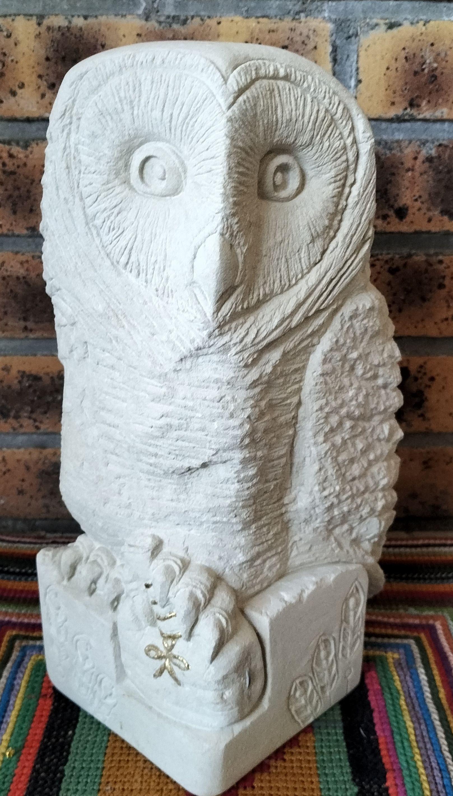
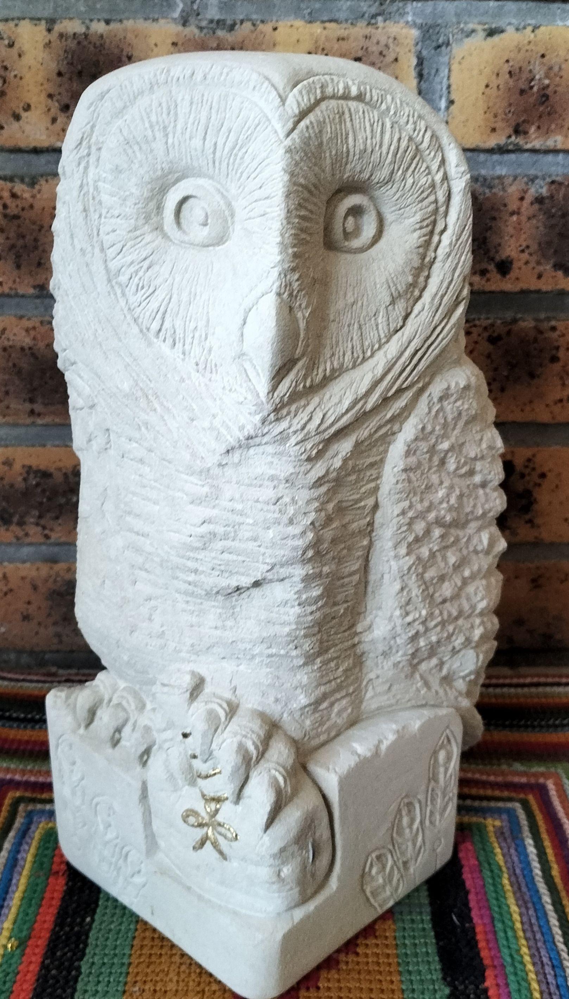

Un savoir-faire intemporel
La sculpture sur pierre est un art où la matière dialogue avec la main. Chaque outil, chaque frappe révèle une histoire gravée dans la pierre.
Starwol est une entreprise artisanale spécialisée dans la sculpture de pierre de Tuffeau, matériau NOBLE et EMBLÉMATIQUE du patrimoine.
Ma mission: redonner vie à ces pierres en créant des pièces uniques. Entre tradition et modernité, dans chaque pièce que je crée, je fais en sorte de faire ressortir L’ÉLÉGANCE, LA RICHESSE et LA FORCE brute de cette matière façonnée par la terre avant nous, aujourd’hui bien trop souvent mise de côté.
Je récupère donc des chutes de pierre de taille de dimensions variées que je transforme selon mon imagination et mon savoir-faire, pour mon plus grand plaisir… et le vôtre.


 
